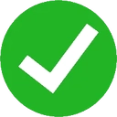

Projet E3 IMAC
MariDex


Terminé (Note : 17/20)
Langue :
Début du projet :
02/12/2025
Date de rendu :
21/12/2025
Langages
t HTML5
u CSS3
p JavaScript
Equipe
Chloé CHABAUD
Matthieu FARANDJIS
Raphael CADETE
Plus sur le projet
Présentation
Réalisé dans le cadre du cours de programmation web d'Alaric ROUGNON-GLASSON,
MariDex est un Pokédex interactif regroupant des informations sur plus de 1000 Pokémon.
Le nom du projet est un mot-valise combinant le nom du Pokémon Marisson, notre mascotte, et le terme Pokédex.
Bien que Moustillon et Gromago aient été envisagés, Marisson s'est imposé par ses couleurs qui ont dicté la charte graphique du site.
Défis Techniques : Le "Zéro Framework"
La contrainte principale était l'interdiction d'utiliser des bibliothèques ou frameworks (React, Vue, etc.).
Cela nous a permis de nous concentrer sur la bonne réalisation artistique du site et sur l'efficacité dans la représentation des informations affichées.
Une autre contrainte, qui est personnelle, est justement cet aspect artistique.
Grâce à l'aide de mon camarade Raphaël et de nos cours, j'ai pu apprendre comment construire un site web joli avec peu d'éléments CSS, le tout sans template !
C'est aussi l'occasion de commencer à utiliser sérieusement Figma.
En effet, lors de mes trois années de BUT, la contrainte principale était de créer un site web fonctionnel et accessible. Il n'y avait pas de notion de "beauté" dans mes anciens projets : nous étions libres sur ce critère.
Apprentissage et Collaboration
Le projet a été un terrain d'apprentissage majeur pour l'équipe :
Gestion de projet : Utilisation de Git avec une branche par fonctionnalité et une séparation stricte entre les branches Main et Dev.
Programmation : Manipulation du DOM via
createElement()etappendChild()pour injecter dynamiquement les données de l'API.Accessibilité : Nous avons vérifié le site via les validateurs HTML et CSS du W3C. Nous avons aussi utilisé l'extension Chrome WAVE. Il reste cependant des améliorations à faire pour la navigation au clavier.
Bilan et Retours
Avec une note finale de 17/20, le projet a été salué pour sa responsivité et la clarté du rapport.
D'autres images
A propos de cet article
Cet article a été coécrit avec l'aide de Gemini à partir de présentations du projet déjà faites (sur LinkedIn, en message privé à des amis...).
J'ai relu attentivement et adapté ce qu'a généré Gemini. Certains passages sont écrits directement par moi.
Gemini m'a permis de gagner du temps.